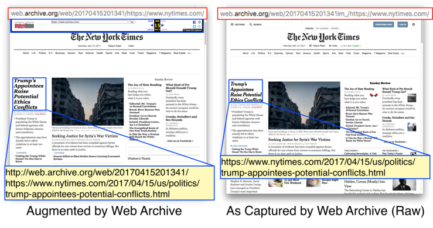
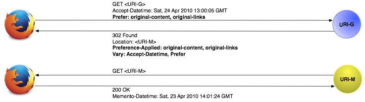
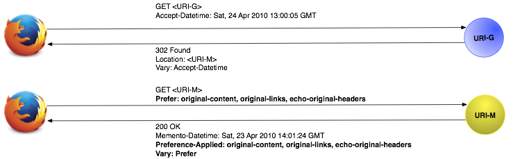

Proposals for Uniform Access to Raw Mementos
Last updated: May 11, 2017
Abstract
Most web archives augment mementos when presenting them to the user, often for usability or legal purposes. Research efforts and software projects need access the original captured "raw" mementos. So that users and software do not need to resort to archive-specific solutions, this document describes proposals for uniform methods of discovering raw mementos in a web archive.
Most web archives augment mementos when presenting them to the user, often for usability or legal purposes, as shown in Figures
1 and
2. Additionally, some archives rewrite links to allow navigation within an archive, shown in
Figure 3. This way the end user can visit other pages within the same archive from the same time period. Smaller archives, because of the size of their collections, do not benefit as much from these rewritten links. Of course, for Memento users, these rewritten links are not really required.
Figure 1: An example of the PRONI archive augmenting a memento for usability purposes. These augmentations, oulined in red, were not in the original resource.
Figure 2: An example of augmented content from the UK National Web Archive, showing that the titles of pages are augmented with the string [ARCHIVED CONTENT] so that users will not confuse them with live search results.
Figure 3: An example of rewritten links. The memento on the left has been augmented by the web archive and thus its links are altered to intra-archive URIs. The memento on the right has no such augmentations.

In many cases, access to the original, unaltered
"raw" content is needed. This is, for example, the case for some research studies, like those at
Archives Unleashed, that require the original HTTP response headers and the original unaltered content. Unaltered content is also needed to replay the original web content in various software projects, like
TimeTravel Reconstruct.
Some web archives, such as the Internet Archive, preserve the original content and original headers that existed at the time of capture of a Memento. This content is currently available, but requires knowledge of the software and configuration of each archive in advance. Here we discuss a proposal for permitting uniform access to this content, regardless of archive configuration or software. Our proposal relies upon the Prefer header introduced in
RFC7240.
As of this writing, some web archives provide the following dimensions of raw content for a memento:
original-contentoriginal-linksoriginal-headers
A mementos existing in the dimension of original-content contain the same content as existed on the web at the moment it was captured by the web archive. Some web archives add additional text so that a memento can be distinguished from a live page. Other web archives provide banners or navigational elements to assist their users. A memento satisfying the quality of original-content would have none of these additional features. The text within the page should match the text that existed in the page at the moment of capture.
A memento existing in the dimension of original-links contains links with the same paths and structure as were encountered on the web at the moment that the Memento was captured by the web archive. Some web archives change the links in a memento to intra-archive URIs. A memento satisfying the quality of original-links would have the same links that existed in the page at the moment of capture.
A memento existing in the dimension of original-headers presents the HTTP headers encountered during the capture of the memento. To avoid issues with presenting stale headers to HTTP clients, the headers are available in the memento's HTTP response in the form of X-Archive-Orig-*, where * is replaced by the original header (e.g., X-Archive-Orig-Content-Type corresponds to the original Content-Type from the time of capture).
The original-content and original-links dimensions can currently be satisfied by
OpenWayback any
pywb's
id_ and
im_ URI patterns (e.g., http://web.archive.org/web/20170415072537im_/bbc.com). The original-headers dimension is satisfied by
im_, but not really by
id_. The
id_ URI pattern produces the actual original headers, which are stale, and, as noted, may create issues with HTTP clients.
Not all web archives utilize the same playback engine. The goal of this document is to propose a uniform method that does not require a user or software developer to create separate cases for each playback engine.
The Prefer header, specified in RFC 7240, provides HTTP clients with the ability to specify preferences to influence the server's response. We propose that Memento clients use the Prefer header to specify which dimensions of rawness they desire.
There are two components of the Memento infrastructure that can produce a memento that satisfies the user's preferences:
- the TimeGate
- the Memento itself
This following sections discusses how each of these options would operate as well as their pros and cons.
Figure 4: Simplified diagram of using the HTTP Prefer Header Against a TimeGate

With the
Prefer header, a client can issue the following request to a URI-G if they prefer a raw memento in any of these dimensions. If a client desires a memento with the original-headers, then they would include
Prefer: original-headers in the HTTP request, as shown in
Example 1.
Example 1: Request headers sent to a TimeGate asking for a memento with only
original-headers
GET /timegate/http://www.example.com/ HTTP/1.1
Host: an.archive.org
Accept-Datetime: Sat, 24 Apr 2010 13:00:05 GMT
Prefer: original-headers
Connection: close
A client can also indicate multiple preferences, separated by commas. In
Example 2, a client issues the following request to a URI-G, stating their preference for all of these dimensions, using
Prefer: original-content, original-links, original-headers.
Example 2: Request headers sent to a TimeGate asking for a memento with only
original-content,
original-links, and
original-headers
GET /timegate/http://www.example.com/ HTTP/1.1
Host: an.archive.org
Accept-Datetime: Sat, 24 Apr 2010 13:00:05 GMT
Prefer: original-content, original-links, original-headers
Connection: close
The TimeGate would then use the
Preference-Applied header to indicate which dimensions are satisfied by the URI-M in the
Location header of its response. Seen in the HTTP response of
Example 3, the
Preference-Applied header contains the value
original-content, original-links, original-headers, indicating that the URI listed in the
Location header satisfies these three dimensions.
Example 3: Response headers from a TimeGate for the request from Example 1
HTTP/1.1 302 Found
Date: Mon, 08 May 2017 17:07:16 GMT
Location: an.archive.org/all/20100414235211/http://www.example.org/
Vary: Accept-Datetime, Prefer
Last-Modified: Mon, 08 May 2017 17:06:44 GMT
Link: <http://www.example.org>;rel="original",
<http://an.archive.org/timemap/link/http://example.org>;rel="timemap"; type="application/link-format"
Preference-Applied: original-content, original-links, original-headers
Content-Type: text/plain; charset=UTF-8
Content-Length: 0
Connection: close
The Vary header would also contain the Prefer value in addition to the accept-datetime value in order to indicate that clients can influence the TimeGate's response by using the Prefer header. This allows responses to be cached for requests that share the same options in their request headers.
The next request would be a normal GET to the URI-M in the Location header.
Memento clients not seeking raw mementos will just submit requests as usual, not including the Prefer header.
Pros:
- Use of Prefer against a TimeGate allows for all negotiation to be handled at the same resource.
Cons:
- This solution tightly integrates the solution for raw mementos with the existing Memento framework. Archives will need to expose the dimensions of rawness that they support so that Memento aggregators can then evaluate the mementos offered by each archive.
- Because the TimeGate must redirect to a URI-M that satisfies the preferred dimensions of rawness, mementos containing different dimensions of rawness will need to be identified by different URI-Ms.
- With negotiation at the TimeGate, this option increases the complexity of the TimeMaps that supply data for aggregators and TimeGates. What if an archive only supports some of the dimensions of rawness for a subset of its holdings?
- RFC 7089 states "It is the TimeGate server's responsibility to honor (or not) such content negotiation, and in doing so it MUST always first select a Memento that meets the user agent's datetime preference, and then consider honoring regular content negotiation for it." What about the dimensions of rawness? If a TimeGate receives a preference for original-headers and other elements of content negotiation, which takes precedence and how should the TimeGate respond? Among mementos from different archives, which answer should an aggregator provide?
- Is negotiation needed for TimeMaps? If each dimension exists at a different URI-M. How does an aggregator supply a TimeMap with a certain subset of dimensions? Is it sufficient to mix dimensions if not all are present? Should there be strict TimeMaps that only list URI-Ms that specifically adhere to the stated preferences, even if there are raw mementos that provide more preferences? Do TimeMaps now need to specify dimensions of rawness along each memento entry?
Figure 5: Simplified diagram of using the HTTP Prefer Header Against a Memento

Instead of asking the TimeGate to redirect to a raw memento, a client could issue the following request directly to a URI-M if they prefer a raw memento in any of these dimensions. In this scenario, a TimeGate plays no role in the generating the response. If a client desires a memento with the original-headers, then they would include
Prefer: original-headers in the HTTP request, as shown in
Example 4. As with Option 1, the client can also supply multiple preferences, separated by commas.
Example 4: Request headers sent directly to a URI-M asking for a memento with
original-headers and
original-content
GET /web/20160721152544/http://www.example.com/ HTTP/1.1
Host: an.archive.org
Prefer: original-headers, original-content
Connection: close
A server would then use the
Preference-Applied header in its response to indicate which dimensions it had satisfied from the request of this URI-M. Seen in the HTTP response of
Example 5, the
Preference-Applied header contains the value
original-content, original-links, original-headers, indicating that the response satisfies these three dimensions.
Example 5: Response headers for a memento located at
http://an.archive.org/web/20160721152544/http://www.example.com/
HTTP/1.1 200 OK
Server: Tengine/2.1.0
Date: Thu, 21 Jul 2016 17:34:15 GMT
Content-Type: text/html;charset=utf-8
Content-Length: 109672
Connection: keep-alive
Memento-Datetime: Thu, 21 Jul 2016 15:25:44 GMT
Content-Location: /web/20100424130005_raw/http://www.example.com/
Vary: prefer
Preference-Applied: original-content, original-links, original-headers
Link: <http://www.example.com/>; rel="original",
<http://an.archive.org/web/timemap/link/http://www.example.com/>; rel="timemap"; type="application/link-format",
<http://an.archive.org/web/http://www.example.com/>; rel="timegate"
X-Archive-Orig-content-type: text/html; charset=utf-8
X-Archive-Orig-vary: Accept-Encoding
X-Archive-Orig-connection: close
X-Archive-Orig-date: Thu, 21 Jul 2016 15:25:44 GMT
X-Archive-Orig-content-length: 109672
To Satisfy the original-headers preference, the server also includes the X-Archive-Orig-* headers that contain the values of the original headers at the time of capture.
The server also includes Vary: prefer, indicating that clients can influence the Memento's response by using the Prefer header. The response can then be cached for requests that have the same options in the request headers.
Optionally, a web archive may include the Content-Location response header to indicate the location of the specific URI-M that satisfies these preferences, if it exists.
If a server can only apply some of the preferences, then that the server only lists which preferences have been applied to the Memento in the Preference-Applied header.
If the client issues no Prefer header in the request, then the server can still use the Preference-Applied header to indicate which preferences are met by default. Again, the Vary header indicates that clients can influence the response via the use of the Prefer request header. The Content-Location header indicates the URI-M of the memento. The response headers for such a default memento from the Internet Archive are shown below. Because the Internet Archive supplies the original-headers on default requests, we see that value used for the Preference-Applied header.
Example 6:
Default response headers for a memento located at
http://an.archive.org/web/20160721152544/http://www.example.com/
HTTP/1.1 200 OK
Server: Tengine/2.1.0
Date: Thu, 21 Jul 2016 16:17:09 GMT
Content-Type: text/html;charset=utf-8
Content-Length: 127383
Connection: keep-alive
Memento-Datetime: Thu, 21 Jul 2016 15:25:44 GMT
Content-Location: /web/20100424130005/http://www.example.com/
Vary: prefer
Preference-Applied: original-headers
Link: <http://www.example.com/>; rel="original",
<http://an.archive.org/web/timemap/link/http://www.example.com/>; rel="timemap"; type="application/link-format",
<http://an.archive.org/web/http://www.example.com/>; rel="timegate"
X-Archive-Orig-content-type: text/html; charset=utf-8
X-Archive-Orig-vary: Accept-Encoding
X-Archive-Orig-connection: close
X-Archive-Orig-date: Thu, 21 Jul 2016 15:25:44 GMT
X-Archive-Orig-content-length: 109672
Pros:
- This solution is decoupled from the Memento Protocol.
- If an archive adds a new dimension at a later date, then it only needs to be supported by those specific mementos with this new dimension.
- Requests to a single URI-M can result in responses containing different dimensions of rawness, thus the archive does not need to provide special TimeMaps for different dimensions, or combinations of dimensions.
- This option saves on the number of requests if iterating through a TimeMap. For each URI-M, a client has one HTTP transaction instead of two. In option 1, the client would need to negotiate with the TimeGate for each URI-M, and then request the URI-M. With option 2, the client only needs to issue a request to each URI-M.
- Archives control what information on rawness that they expose.
Cons:
- Clients will need to separately send the
Prefer header to the memento after negotiating with the TimeGate, possibly negotiating a second time.
- The systems used by web archives must support this
Prefer feature for all mementos.
These are evolving solutions. Thinking about mementos in terms of preferences opens up the possibilities of addressing additional use cases outside of the raw use case. The list below contains the preferences that have been discussed so far.
original-content - mentioned in this documentoriginal-links - mentioned in this documentoriginal-headers - mentioned in this documentscreenshot - used to indicate that the Memento in the response is in fact an image of the rendered web page, with an image content type, such as image/png or image/jpgderivative-document - used to indicate that the Memento in the response is a PDF or MHT version of the rendered web page, could also be a superset of screenshotsigned - used to indicate that the entity returned is digitally signed, perhaps for integrity verification